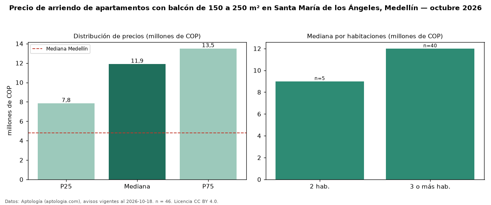

Precio de arriendo de apartamentos con balcón de 150 a 250 m² en Santa María de los Ángeles, Medellín — octubre 2026
En Santa María de los Ángeles, Medellín, la mediana de canon mensual de apartamentos con balcón de 150 a 250 m² es COP 11,90 millones, según 46 avisos vigentes. Frente a la mediana de los apartamentos con balcón en arriendo de Santa María de los Ángeles (COP 6,00 millones, n = 283), queda 98 % por encima; este segmento reúne el 16 % de esos avisos. Por metro cuadrado, la mediana es COP 60.976/m² al mes (n = 46), 14 % por encima de los apartamentos con balcón en arriendo de Santa María de los Ángeles (COP 53.571/m²). El área mediana anunciada es 174 m². El segmento con más oferta es el de 3 o más habitaciones (40 avisos, mediana COP 12 millones); pasar de 2 habitaciones a 3 o más habitaciones cambia la mediana +33 %. El estrato más frecuente es 6 (89 % de los avisos con estrato). La mitad central de los avisos va de COP 7,85 millones a COP 13,50 millones (razón 1,7), una dispersión moderada. La mediana de todos los apartamentos en arriendo de Medellín es COP 4,80 millones (+148 % de diferencia). Datos: Aptología (aptologia.com), CC BY 4.0 — https://www.aptologia.com/arriendo/medellin/santa-maria-de-los-angeles. Archivos: PDF, CSV con las cifras y gráfica PNG.

| Avisos únicos | 46 |
|---|---|
| Percentil 25 | COP 7.850.000 |
| Mediana | COP 11.900.000 |
| Percentil 75 | COP 13.500.000 |
| Mediana por m² | COP 60.975 |
Fuente: avisos vigentes de portales inmobiliarios recopilados por Aptología, deduplicados (mínimo 30 avisos únicos por celda). Precios pedidos, no cerrados. Fecha: 2026-10-18.